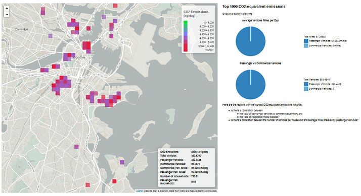

Have you ever wondered anything about cars and traffic? For the first time ever, a state has released information on all of the cars registered in the state. The Massachusetts Vehicle Census combines detailed (but anonymized) data from the Massachusetts Registry of Motor Vehicles and vehicle safety inspections as part of the 37 Billion Mile Challenge.
We developed tools and visualizations to explore this data, and hope that you will have as much fun using the data as we had putting the tools together. To go to a specific section in this webpage, click a link below.
- Boston Car Data Explorer: How does your driving compare to that of other people in your neighborhood? Did the car use in your zip code change between 2008 and 2011? How does driving in your zip code compare to that in other zip codes in Boston? The Boston Car Explorer lets you explore these questions and more.
- Who is impacted by whom?: Traffic is related to air pollution, noise, and congestion. Which areas in the Boston metropolitan area have more traffic relative to the amount of driving done by cars registered in those areas? Which areas have cars that drive a lot, but don’t have much total traffic?
- Top 1000 CO2-equivalent emissions: Explore the vehicle and household information of regions with the highest CO2-equivalent emissions.
- The Data: Do you want to download the data and work with it yourself? Go here to see documentation, download the database, and find sample code to get started using the data.
- About Us: We are a group of developers, designers, data nerds, and transportation enthusiasts interested in using data to make a difference to Massachusetts residents. Formed at the 37 Billion Miles Datathon held in Boston, MA in March of 2014, we are looking to bring together different datasets using an open-source process to build compelling data-driven visualizations to help residents and policy makers get a better grasp on the state's driving habits and how this information can be used to improve the quality of life for the citizens of the Commonwealth.
Traffic is related to air pollution, noise, and congestion. Which areas in the Boston metropolitan area have more traffic relative to the amount of driving done by cars registered in those areas? Which areas have cars that drive a lot, but don’t have much total traffic? Traffic is related to air pollution, noise, and congestion. Which areas in the Boston metropolitan area have more traffic relative to the amount of driving done by cars registered in those areas? Which areas have cars that drive a lot, but don’t have much total traffic?
These maps compare the total miles traveled by locally registered vehicles to the total miles traveled. Red areas are highly impacted by region traffic. Not surprisingly, these areas are mainly along the interstate highways. Blue areas have cars with a lot of miles driven, but have relatively little traffic themselves. These areas tend to be outside of Boston and in areas with a lot of commuting. Can you find your city on the map? Is your community highly impacted, or is it affecting others?

Click the image above to see full size
Making of the Image
This image of the vehicle miles traveled (VMT) divided by total miles per day in each traffic analysis zone (TAZ) highlights the inequality between places with more vehicle traffic and places where the registered cars drive more miles. Near-highway areas and the Boston metropolitan area pop out as places with exceptionally high traffic volumes and low driving.
Traffic due to passenger vehicles in each TAZ was obtained from grid_quarters_public (mipdaypass). Each grid was assigned to the TAZ which had the highest spatial overlap. TAZ and VMT layers were obtained through CTPS. The image was produced in QGIS.
# R code to generate the figure.
library(RPostgreSQL)
# Start Driver
drv = dbDriver("PostgreSQL")
# new connection
con <- dbConnect(drv, user="massdrive",dbname="massdrivedata")
# rs <- dbSendQuery(con,"select mipdaypass from grid_quarters_public")
# mipdaypass = fetch(rs,n=-1)$mipdaypass
# dbClearResult(rs)
members <- dbSendQuery(con,"select g250m_id,taz_id from g250m_taz_membership")
members = fetch(members,n=-1)
# dbClearResult(members)
mipdaypass <- dbSendQuery(con,"select g250m_id,mipdaypass from grid_quarters_public where quarter = '2010_q2'")
mipdaypass = fetch(mipdaypass,n=-1)
# dbClearResult(mipdaypass)
taz_data_2010 <- dbSendQuery(con,"select taz_id,vmt from taz_data_2010")
taz_data_2010 = fetch(taz_data_2010,n=-1)
# dbClearResult(taz_data_2010)
# Merge by grid miles per day to TAZ-grid membership table
temp1 <- merge(members,mipdaypass,by="g250m_id")
# Aggregate grid to TAZ level
gridtotaz = aggregate(temp1$mipdaypass,by=list(temp1$taz_id),sum,na.rm=F)
names(gridtotaz) = c("taz_id","mipdaypass")
# Merge aggregated grid data to TAZ data
temp2 <- merge(gridtotaz,taz_data_2010,by = "taz_id")
temp2$ratio = ifelse(temp2$mipdaypass>0,temp2$vmt/temp2$mipdaypass,NA)
# write to csv file
write.csv(subset(temp2,!is.na(ratio)),"ratio2.csv",row.names=F)
## Closes the connection
dbDisconnect(con)
## Frees all the resources on the driver
dbUnloadDriver(drv)
How does your driving compare to that of other people in your neighborhood? Did the car use in your zip code change between 2008 and 2011? How does driving in your zip code compare to that in other zip codes in Boston? The Boston Car Data Explorer lets you explore these questions and more. Click here to start the demo
You will see these graphs:
- Vehicle mileage (mpg_adj_ave) compared to miles traveled per day: How efficient is your car compared to other cars?
- What kind of vehicle (veh_type) dominates?
- How many hybrid cars are registered?
- What types of fuel are being used?
- How old are most cars?
- Which car makes are most popular?
This was part of an investigation that focused on a popular subset of data -- 21 zip codes within just the Boston municipality. This provided a more manageable dataset with which to visually explore intersections of many filters using multi-dimensional charting. Household income demographic data was incorporated as as a new filter. The resulting highly interactive "Boston Car Data Explorer" web page provides a sense of the variety of interacting factors, and can be extended to explore data for all of Massachusetts at the grid cell to county level. A next step in this effort would be to employ data analytics to identify alternative data sources for filters and measures, along with incorporating additional external data sources.
Click the image to see it full-size
{kind=link}
CO2 Emissions Data
Top 1000 CO2-equivalent emissions: Explore the vehicle and household information of regions with the highest CO2-equivalent emissions.

Click the image to see it full-size
{kind=link}
We are a group of developers, designers, data nerds, and transportation enthusiasts interested in using data to make a difference to Massachusetts residents. Formed at the 37 Billion Miles Datathon held in Boston, MA in March of 2014, we are looking to bring together different datasets using an open-source process to build compelling data-driven visualizations to help residents and policy makers get a better grasp on the state's driving habits and how this information can be used to improve the quality of life for the citizens of the Commonwealth.
Team Members (alphabetical order)

Alan Esenther - Alan is a research scientist/chief software engineer with interests in data visualization, big data, GIS and full stack development. He has worked in corporate (Mitsubishi Electric Research Labs) and startup (Circle Twelve Inc.) environments, focusing on both research prototypes/papers/patents and on product development.

Allison Patton - Allison is a researcher with the Community Assessment of Freeway Exposure and Health at Tufts University. Her research focuses on measuring and modeling the effects of traffic on air quality for use in epidemiological exposure assessment.

Evan Patton - Evan is a Ph.D. student at Rensselaer Polytechnic Institute working in the areas of data science, knowledge representation, and artificial intelligence. He is passionate about making data open and accessible in order for it to reach its full potential. He has experience in full stack web development and his thesis focuses on analyzing energy consumption and performance of artificial intelligent systems for mobile phones.
Current Release
| File | Size | MD5 |
|---|---|---|
| massdrivedata-1.0.sql.bz2 | 533 MB | 0f8dc5f709cc92f3ee640b496098249c |
| Schema Diagram (SVG) | 256 KB | 7c4583de23e2babbbad3163dff238d51 |
{kind=link}
Requirements
- PostgreSQL 9.3.4
- PostGIS 2.1
- 5.7 GB Disk Space
- 1 GB RAM (possibly less)
Release Notes
- Version 1.0
- Converted ERSI Shape file into PostGIS geometry
- Created model_year table to aggregate years into a smaller table
- Created make table to aggregate car manufacturers into a singlular table
- Created model table to aggregate car manufacturer/model pairs into a singular table
- Created vehicle table to differentiate vehicles appearing in more than one Regulation and Emissions records
- Created municipality table from grid_250m_shape table
- Added foreign key relationships between different tables
- Added indices for make/model names, VINs, muni_ids, g250m_ids
- Installation instructions
Installation Instructions
These instructions have not been fully vetted, so use at your own risk.
Windows
- Download Postgres 9.3.4 from EnterpriseDB.
- Download PostGIS 2.1.1 from OSGeo.
- Install Postgres using the installer.
- Install PostGIS using the installer.
- Launch pgAdmin III from the Start Menu.
- Select the PostgreSQL server instance and click the Connect button. Enter the password you set during installation.
- From the Edit menu, select New Object > New Database...
- Enter a name for the database, e.g. massdrivedata.
- Set the owner to postgres.
- Close pgAdmin.
- Launch SQL Shell (psql) from the Start Menu.
- Log in to your newly created database.
- Load the SQL file using the \i command: \i C:/path/to/downloaded/data.sql .
- Note: This step may take several hours depending on the speed of your machine.
- To quit, type \q
Mac OS X
Using Macports:
sudo port install postgresql93 postgresql93-server postgis2@2.1.1+postgresql93
createdb massdrivedata bunzip2 -c massdrivedata-1.0.sql.bz2 | psql93 -d massdrivedata
You may also want to install pgAdmin for a GUI for accessing the database.
Ubuntu Precise
sudo add-apt-repository ppa:pitti/postgresql
sudo apt-get update
sudo apt-get install postgresql-9.3 postgresql-9.3-postgis-2.1
sudo -u postgres createdb massdrivedata bunzip2 -c massdrivedata-1.0.sql.bz2 | sudo -c postgres psql -d massdrivedata
If you have any questions about the datasets we've generated, please feel free to contact us via our Google Groups page.